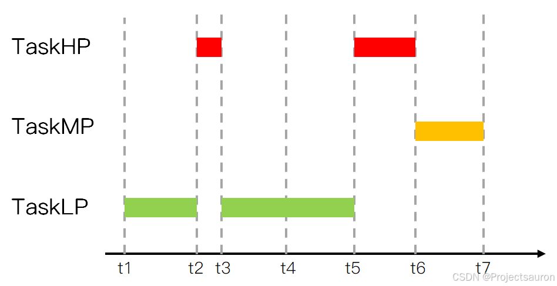

FreeRTOS 快速入门（六）之互斥量
[toc]
一、互斥量
1、基本概念
互斥量又称互斥信号量（本质是信号量），是==一种特殊的二值信号量==，它和信号量不同的是，它支持互斥量所有权、递归访问以及防止优先级翻转的特性，用于实现对临界资源的独占式处理。 任意时刻互斥量的状态只有两种，开锁或闭锁。当互斥量被任务持有时，该互斥量处于闭锁状态，这个任务获得互斥量的所有权。当该任务释放这个互斥量时，该互斥量处于开锁状态，任务失去该互斥量的所有权。当一个任务持有互斥量时，其他任务将不能再对该互斥量进行开锁或持有。持有该互斥量的任务也能够再次获得这个锁而不被挂起，这就是递归访问，也就是递归互斥量的特性，这个特性与一般的信号量有很大的不同，在信号量中，由于已经不存在可用的信号量，任务递归获取信号量时会发生主动挂起任务最终形成死锁。
如果想要用于实现同步（任务之间或者任务与中断之间），二值信号量或许是更好的选择，虽然互斥量也可以用于任务与任务、任务与中断的同步，但是互斥量更多的是用于保护资源的互锁。
互斥锁可以被视为一个与正在共享的资源相关联的令牌，对于合法访问资源的任务，它必须首先成功 “获取” 令牌，成为资源的持有者，当持有者完成对资源的访问之后，其需要 ”归还” 令牌，只有 “归还” 令牌之后，该令牌才可以再次被其他任务所 “获取” ，这样保证了互斥的对共享资源的访问，上述机制如下图所示：

2、运作机制

用互斥量处理不同任务对临界资源的同步访问时，任务想要获得互斥量才能进行资源访问，如果一旦有任务成功获得了互斥量，则互斥量立即变为闭锁状态，此时其他任务会因为获取不到互斥量而不能访问这个资源，任务会根据用户自定义的等待时间进行等待，直到互斥量被持有的任务释放后，其他任务才能获取互斥量从而得以访问该临界资源，此时互斥量再次上锁，如此一来就可以确保每个时刻只有一个任务正在访问这个临界资源，保证了临界资源操作的安全性。
3、死锁现象
“死锁” 是使用互斥锁进行互斥的另一个潜在陷阱，当两个任务因为都在等待对方占用的资源而无法继续进行时，就会发生死锁，考虑如下所述的情况：
- 任务 A 执行并成功获取互斥量 X
- 任务 A 被任务 B 抢占
- 任务 B 在尝试获取互斥量 X 之前成功获取互斥量 Y，但互斥量 X 由任务 A 持有，因此对任务 B 不可用，任务 B 选择进入阻塞状态等待互斥量 X 被释放
- 任务 A 继续执行，它尝试获取互斥量 Y，但互斥量 Y 由任务 B 持有，所以对于任务 A 来说是不可用的，任务 A 选择进入阻塞状态等待待释放的互斥量 Y
经过上述的这样一个过程，读者可以发现任务 A 在等待任务 B 释放互斥量 Y ，而任务 B 在等待任务 A 释放互斥量 X ，两个任务都在阻塞状态无法执行，从而导致 ”死锁“ 现象的发生，与优先级翻转一样，避免 “死锁” 的最佳方法是在设计时考虑其潜在影响，并设计系统以确保不会发生死锁。
4、递归互斥量
任务也有可能与自身发生死锁，如果任务尝试多次获取相同的互斥体而不首先返回互斥体，就会发生这种情况，考虑以下设想：
- 任务成功获取互斥锁
- 在持有互斥体的同时，任务调用库函数
- 库函数的实现尝试获取相同的互斥锁，并进入阻塞状态等待互斥锁变得可用
在此场景结束时，任务处于阻塞状态以等待互斥体返回，但任务已经是互斥体持有者。 由于任务处于阻塞状态等待自身，因此发生了死锁。
通过使用==递归互斥体==代替标准互斥体可以避免这种类型的死锁，==同一任务可以多次 “获取” 递归互斥锁，并且只有在每次 “获取” 递归互斥锁之后都调用一次 “释放” 递归互斥锁，才会返回该互斥锁==。
因此递归互斥量可以视为特殊的互斥量，一个互斥量被一个任务获取之后就不能再次获取，其他任务想要获取该互斥量必须等待这个任务释放该互斥连，但是==递归互斥量可以被一个任务重复获取多次==，当然每次获取必须与一次释放配对使用。
注意不管是互斥量，还是递归互斥量均存在优先级继承机制，但是由于 ISR 并不是任务，因此==互斥量和递归互斥量不能在中断中使用==。
二、优先级反转和优先级继承问题
1、优先级反转问题
在上一讲 FreeRTOS 快速入门（五）之信号量 中提到过使用二值信号量用于进程间同步时可能会出现优先级反转的问题，什么是“优先级反转”问题呢？考虑如下所述的任务运行过程：
- 在 t1 时刻，低优先级的任务 TaskLP 切入运行状态，并且获取到了一个二值信号量
- 在 t2 时刻，高优先级的任务 TaskHP 请求获取二值信号量，但是由于 TaskLP 还未释放该二值信号量，所以在 t3 时刻，任务 TaskHP 进入阻塞状态等待二值信号量被释放
- 在 t4 时刻，中等优先级的任务 TaskMP 进入就绪状态，由于不需要获取二值信号量，因此抢占低优先级任务任务 TaskLP 切入运行状态
- 在 t5 时刻，任务 TaskMP 运行结束，任务 TaskLP 再次切入运行状态
- 在 t6 时刻，任务 TaskLP 运行结束，释放二值信号量，此时任务 TaskHP 从等待二值信号量的阻塞状态切入运行状态
- 在 t7 时刻，任务 TaskHP 运行结束
根据上述流程我们可以发现一个问题，即在 t4 时刻中等优先级的任务 TaskMP 先于高优先级的任务 TaskHP 抢占了处理器，这破坏了 FreeRTOS 基于优先级抢占式执行的原则，我们将这种情况称为==优先级反转问题==，上述描述的任务运行过程具体时刻流程图如下图所示：
导致这种优先级反转的问题的根本原因在于持有锁的低优先级任务因为优先级低，而得不到执行，得不到执行的话，就无法解锁，无法解锁就导致高优先级的任务获取锁会失败，从而导致高优先级任务一直在阻塞状态。
所以解决方式就是优先级继承，既然低优先级任务无法执行，那我就在高优先级任务进入阻塞之前将低优先级任务的优先级提升至与高优先级一致，这样等高优先级任务进入阻塞之后，低优先级任务就能继承高优先级任务的优先级，这样低优先级任务就能尽快执行（从而解锁，让高优先级能够获取锁）。
2、优先级继承问题
为了解决使用二值信号量可能会出现的优先级翻转问题，对二值信号量做了改进，增加了一种名为 “==优先级继承==” 的机制，改进后的实例称为了==互斥量==，注意虽然互斥量可以减缓优先级翻转问题的出现，但是并不能完全杜绝。
下面仍然考虑由上一小小节中提出的任务运行过程的例子，具体流程如下所述，我们可以细心理解其中的不同之处：
- 在 t1 时刻，低优先级的任务 TaskLP 切入运行状态，并且获取到了一个互斥量
- 在 t2 时刻，高优先级的任务 TaskHP 请求获取互斥量，但是由于 TaskLP 还未释放该互斥量，所以在 t3 时刻，任务 TaskHP 进入阻塞状态等待互斥量被释放，但是与二值信号量不同的是，此时
FreeRTOS将任务 TaskLP 的优先级临时提高到与任务 TaskHP 一致的优先级，也即高优先级 - 在 t4 时刻，中等优先级的任务 TaskMP 进入就绪状态发生任务调度，但是由于任务 TaskLP 此时优先级被提高到了高优先级，因此任务 TaskMP 仍然保持就绪状态等待优先级较高的任务执行完毕
- 在 t5 时刻，任务 TaskLP 执行完毕释放互斥量，此时任务 TaskHP 抢占处理器切入运行状态，并恢复任务 TaskLP 原来的优先级
- 在 t6 时刻，任务 TaskHP 执行完毕，此时轮到任务 TaskMP 执行
- 在 t7 时刻，任务 TaskMP 运行结束
根据互斥量的上述任务流程我们可以发现与二值信号量的不同之处，上述描述的任务运行过程具体时刻流程图如下图所示：

三、互斥量函数
1、互斥量
1、创建
创建互斥量和递归互斥量的函数都有 2 种：动态分配内存，静态分配内存，函数原型如下：
1 | |
2、获取互斥量
获取互斥量直接使用获取信号量的函数即可，但对于递归互斥量需要专门的获取函数，具体如下所述：
1 | |
3、释放互斥量
释放互斥量直接使用释放信号量的函数即可，但对于递归互斥量需要专门的释放函数，具体如下所述：
1 | |
4、删除互斥量
直接使用信号量的删除函数即可，具体如下所述：
1 | |